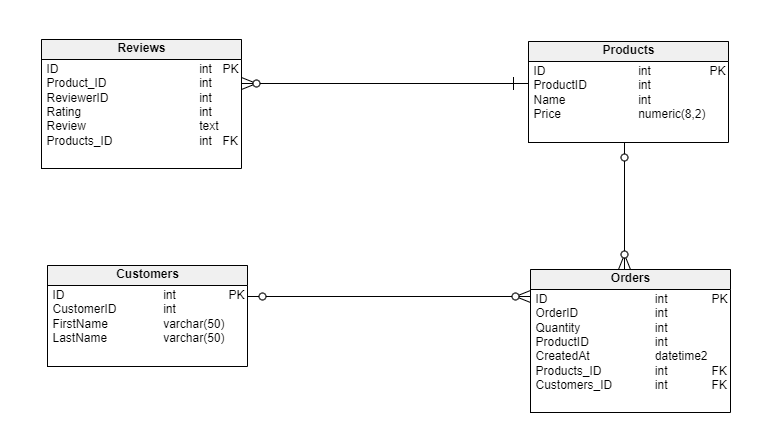
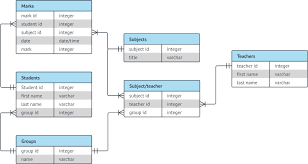

Recent Posts

Harapan
Harapan saya terhadap mata kuliah Basis Data.
Basis Data
Apa itu Basis Data?
Conceptual DB
Apa itu Conceptual DB?

Physical Model
Apa itu Physical model?

Tutorial Install DBMS
Tutorial install DBMS

Mengenal Komponen ERD: Entitas, Atribut, dan Relasi
Apa itu ERD?
Apa itu Primary Key, Foreign Key, dan Candidate Key?
Penjelasan Lengkap hingga contoh dari Primary Key, Foreign Key, dan Candidate Key

Relasi Pada ERD dan Masalah many-to-many
Penjelasan Lengkap ERD dan Masalah many-to-many
5 Contoh Intersection pada ERD
Video mengenai Intersection dan contohnya
Normalisasi ERD
Penjelasan Lengkap Mengenai Normalisasi ERD